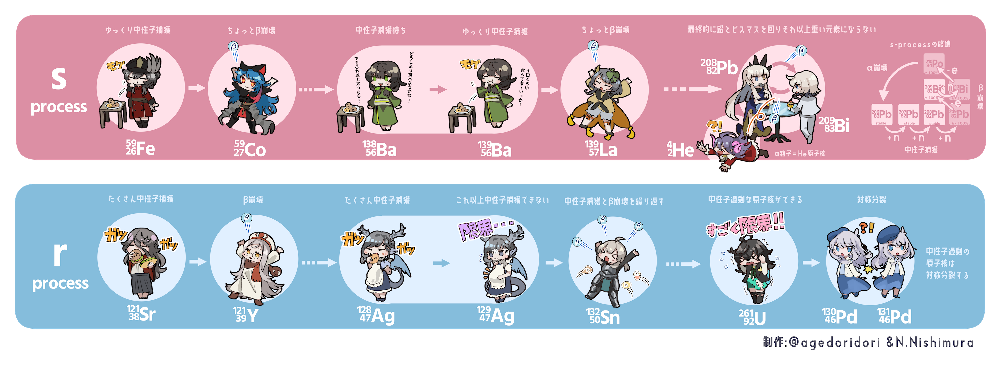
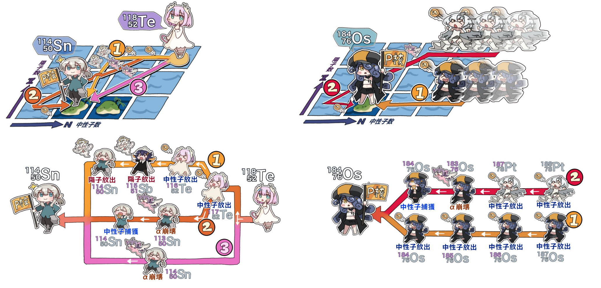

What's this?
You may remember learning about the periodic table of elements in school science classes. The table organizes chemical elements according to their properties. Each element has its own distinctive characteristics. The GENSOGAKUSHO (© Agedoridori) project personifies these elements, creating character illustrations and imagining the world they inhabit.
GENSOGAKUSHO × GENSOGOSEI (nucleosynthesis) is a collaboration between the GENSOGAKUSHO artist and Nobuya Nishimura, a researcher in nuclear astrophysics. The illustrations depict these element characters taking part in astrophysical nucleosynthesis—how atomic nuclei are formed and transformed in the Universe. Drawing on research into astronomical phenomena and nuclear reactions, the characters bring nucleosynthesis to life with charm and humor.
The GENSOGAKUSHO world also incorporates stories about the discovery of elements and their chemical properties. The illustrations can therefore be enjoyed as part of a fictional world while also serving as useful material for scientific explanations.
For more information, visit the GENSOGAKUSHO website or see the presentation slides from the UKAKUREN workshop (July 2022).
Currently, the following illustrations are available:
- Neutron-capture nucleosynthesis (the s- and r-processes) (released in August 2022; five illustrations)
You may freely use illustrations published on this website or distributed by the creators for scientific and educational purposes, including research presentations, teaching, and public outreach. You may also publish presentations and other materials containing the illustrations, provided that they are properly credited. No advance permission or follow-up notification is required for these uses. Feedback is welcome, although it is not required.
However, please do not redistribute the original image files or alter the copyright notices. Creating or selling products featuring the illustrations without permission is also prohibited. If you are unsure whether a particular use is permitted, please contact us. You can also inquire about high-resolution files or versions without backgrounds or text, although we may not be able to accommodate every request.

Works
Neutron-capture nucleosynthesis (the s- and r-processes)
Illustrations of nucleosynthesis through the s- and r-processes.




Future plans?
There may be a second installment if this series is well received. Thank you for your support!

Contact
If you have any questions, please contact either or both project members. To use the email addresses below, replace _at_ with @.
- (Illustrations) Agedoridori (e-mail: agedoridori _at_ gmail.com)
- (Scientific content) Nobuya Nishimura (e-mail: nobuya _at_ cc.kogakuin.ac.jp)